Introduction
Deep learning models are typically trained to transform raw data into representations optimized for specific tasks. Recently, two lines of research have inspired a deeper inquiry into the nature of these representations. The CLIP framework demonstrated the utility of aligning representations across modalities, using paired image-text data to train joint embeddings for cross-modal retrieval. Meanwhile, the Platonic Representation Hypothesis posits that performant models converge toward a shared statistical model of reality in their representation spaces, suggesting a potential universality underlying learned representations.
This project bridges these ideas by exploring whether representations from disparate pre-trained unimodal neural networks can be aligned into a shared multimodal latent space, inspired by the joint embedding approach of CLIP and motivated by the convergence hypothesis of Platonic Representations. The proposed framework uses frozen unimodal encoders with learned linear adapters to align representations across modalities. Our aim is to determine if such aligned representations better approximate those of larger, more performant models.
Inspired by the success of CLIP in aligning representations across modalities and the theoretical insights of the Platonic Representation Hypothesis, we propose a framework that aligns pre-trained unimodal encoders into a shared multimodal latent space using simple linear adapters. By leveraging frozen encoders such as ResNet-18 for images and DistilBERT for text, we aim to achieve alignment without retraining a larger state-of-the-art model like DINOv2, enabling scalability to new modalities with minimal overhead.

Motivation
Our approach is motivated by three key insights:
- Inspiration from CLIP: CLIP demonstrated that cross-modal representations can be aligned using paired data and contrastive learning. However, joint training limits scalability to new modalities. Our method decouples the encoders, aligning their outputs via lightweight adapters.
- Testing the Platonic Representation Hypothesis: This hypothesis suggests that models converge toward a shared statistical model of reality. Aligning diverse unimodal encoders tests whether this convergence can be explicitly achieved.
- Scalability and Modularity: By aligning frozen encoders post hoc, our framework supports efficient integration of new modalities without the need for extensive joint training.
Hypothesis
Our work is grounded in the following hypotheses:
- A shared latent space exists where unimodal representations from different encoders can be aligned through linear transformations.
- Aligning these representations produces embeddings that closely approximate those of performant models, such as DINOv2, as measured by kernel alignment metrics.
- Multimodal alignment captures mechanisms of representation convergence, providing empirical evidence for the Platonic Representation Hypothesis.
Mathematical Framework
At the core of our project is the hypothesis that pre-trained unimodal representations can be aligned into a shared multimodal latent space. This section formalizes the mathematical structure underlying our framework, detailing how representations are extracted, aligned, and evaluated.
Multimodal Data Representation
Let the world generate raw multimodal data:
\[ \mathcal{D}_\text{world} = \left\{\left(\theta^{(i)}, \psi^{(i)}, \phi^{(i)}, \dots\right)\right\}_{i=1}^N, \quad \theta \in \mathcal{\Theta}, \psi \in \mathcal{\Psi}, \phi \in \mathcal{\Phi}, \dots \]
where \( \mathcal{\Theta}, \mathcal{\Psi}, \mathcal{\Phi} \) represent different modalities (e.g., image, text, audio), and \( \theta, \psi, \phi \) are specific instances of these modalities.
For simplicity, we focus on a two-modality setting with images (\( \mathcal{X} \)) and text (\( \mathcal{Y} \)):
\[ \mathcal{D}_\text{world} = \left\{\left(x^{(i)}, y^{(i)}\right)\right\}_{i=1}^N, \quad x \in \mathcal{X}, y \in \mathcal{Y}. \]

Learned Adapters
We use frozen pre-trained encoders to extract representations:
\[ X_\text{enc}: \mathcal{X} \rightarrow \mathbb{R}^{d_x}, \quad Y_\text{enc}: \mathcal{Y} \rightarrow \mathbb{R}^{d_y}, \]
where \( d_x \) and \( d_y \) are the embedding dimensions for images and text, respectively. We employ:
- ResNet-18 trained on ImageNet1K for images (\( d_x = 512 \)).
- DistilBERT trained on BookCorpus for text (\( d_y = 768 \)).
To project these into a shared latent space \( \mathbb{R}^{d_e} \), we introduce adapters:
\[ W_x : \mathbb{R}^{d_x} \rightarrow \mathbb{R}^{d_e}, \quad W_y : \mathbb{R}^{d_y} \rightarrow \mathbb{R}^{d_e}. \]
The adapted encoders are defined as:
\[ f_\text{image}(x) = W_x \circ X_\text{enc}(x), \quad g_\text{text}(y) = W_y \circ Y_\text{enc}(y), \]
where \( f_\text{image} \) and \( g_\text{text} \) map images and text to the shared latent space \( \mathbb{R}^{d_e} \).
Dual-Encoder Contrastive Objective
To align the representations, we use a dual-encoder contrastive loss, inspired by the coursework (see Homework 4). This loss encourages positive pairs to be similar while pushing apart negative pairs:
\[ \mathcal{L}_{\text{contrastive}} = -\frac{1}{N} \sum_{i=1}^N \log \frac{\exp\left(f_\text{image}(x^{(i)}) \cdot g_\text{text}(y^{(i)}) / \tau\right)}{\sum_{j=1}^N \exp\left(f_\text{image}(x^{(i)}) \cdot g_\text{text}(y^{(j)}) / \tau\right)}, \]
where \( \tau \) is the temperature parameter that controls the sharpness of the similarity scores.
Homework 4 Connection

Typically, contrastive learning applies to different "views" generated through transformations or augmentations of samples from a single modality. In our approach, we generalize this concept by treating different modalities (image and text) as distinct views of a hypothesized common underlying reality, inspired by the Platonic Representation Hypothesis.
Connection to the Platonic Representation Hypothesis
The Platonic Representation Hypothesis (PRH) posits that representations from different modalities converge toward a shared Platonic representation. In our framework, we hypothesize that contrastive alignment between the unimodal image and text encoders drives this convergence.
Our aligned multimodal encoder is defined as:
\[ h_\text{multi}(x, y) = \lambda \cdot f_{\text{image}}(x) + (1 - \lambda) \cdot g_{\text{text}}(y), \]
where \( \lambda \) is a learnable parameter controlling the balance between the two modalities.
Performant Model Benchmark
To evaluate the quality of our aligned multimodal representations, we use the DINOv2-small encoder as a benchmark. Specifically, we define the function implemented by the DINOv2-small feature extractor as:
\[ \text{DINOv2}: \mathcal{X} \rightarrow \mathbb{R}^{d_e}. \]
The DINOv2 encoder serves as a performant reference model, providing high-quality image representations. By comparing our aligned multimodal representations to the DINOv2 representations, we measure how effectively our contrastive alignment approximates this benchmark.
Kernel Alignment Metric
We characterize representations in terms of their kernels, which capture the similarity between data points. Two representations are considered aligned if their kernels are similar for corresponding inputs. Given the kernels:
- \( K_X(i, j) = \langle f_{\text{image}}(x^{(i)}), f_{\text{image}}(x^{(j)}) \rangle \)
- \( K_Y(i, j) = \langle g_{\text{text}}(y^{(i)}), g_{\text{text}}(y^{(j)}) \rangle \)
- \( K_{\text{align}}(i, j) = \langle h_\text{multi}(x^{(i)}, y^{(i)}), h_\text{multi}(x^{(j)}, y^{(j)}) \rangle \)
- \( K_{\text{DINOv2}}(i, j) = \langle \text{DINOv2}(x^{(i)}), \text{DINOv2}(x^{(j)}) \rangle \)
we evaluate alignment performance using the mutual-KNN kernel alignment metric \( m \).
Specifically, we compute the following values:
- Unimodal Alignment:
- \( m(K_X, K_{\text{DINOv2}}) \): Alignment of the image encoder \( f_\text{image} \) kernel with the DINOv2 kernel.
- \( m(K_Y, K_{\text{DINOv2}}) \): Alignment of the text encoder \( g_\text{text} \) kernel with the DINOv2 kernel.
- Multimodal Alignment:
- \( m(K_{\text{align}}, K_{\text{DINOv2}}) \): Alignment of the multimodal encoder \( h_\text{multi} \) kernel with the DINOv2 kernel.
We conjecture that the aligned multimodal kernel will have higher similarity with \( K_{\text{DINOv2}} \) than the unimodal kernels.
Methodology
All code for this project is available in our Google Colab notebook.
Data Pipeline
We use the first 12,800 samples of the Flickr30k dataset, which contains paired image-caption samples. Each image is paired with the first caption, forming a single positive pair \( (x^{(i)}, y^{(i)}) \).
- Image Processing:
- Resize to 224x224.
- Normalize using ImageNet statistics.
- Convert to tensors for ResNet-18.
- Text Processing:
- Tokenize with DistilBERT tokenizer.
- Pad/truncate to 64 tokens.
- Convert to tensors for DistilBERT.
- Data Loading:
- Batch size: 256.
- Train-validation split: 75%-25%.
Expand for schematic of data pipeline.
Model Architecture
We use frozen pre-trained encoders with trainable adapters to align representations in a shared multimodal space:
- Frozen Encoders:
- Image Encoder: ResNet-18 (\( d_x = 512 \)).
- Text Encoder: DistilBERT (\( d_y = 768 \)).
- Adapters:
- Linear Adapter: Matrix multiplication by \( W_x \) or \( W_y \) plus bias term.
- MLP Adapter: 2-layer MLP with GELU and LayerNorm.
- Reference Model: DINOv2-small (\( d_e = 768 \)).
Training Procedure
We train the adapters using the dual-encoder contrastive loss for 100 epochs on Flickr30k with a temperature parameter \( \tau = 0.02 \) in the contrastive loss. Other relevant hyperparameter settings:
- Optimizer: AdamW
- Learning Rate: \(1 \times 10^{-4}\) (cosine decay with warmup).
- Gradient Clipping: 0.5.
- Weight Decay: 0.001 (linear adapter) and 0.005 (MLP adapter).
- Label Smoothing: 0.05.
- Dropout: 0.1.
Expand for schematic of training pipeline.
Evaluation Metrics
We will test two key hypotheses based on the mutual-kNN values we described in the Mathematical Framework, before and after training:
- Weak Hypothesis (\( H_1 \)): The aligned multimodal kernel achieves higher similarity with the DINOv2 kernel than the average of the unimodal kernels: \[ m(K_{\text{align}}, K_{\text{DINOv2}}) > \text{avg}(m(K_X, K_{\text{DINOv2}}), m(K_Y, K_{\text{DINOv2}})). \]
- Strong Hypothesis (\( H_2 \)): The aligned multimodal kernel surpasses even the best unimodal kernel: \[ m(K_{\text{align}}, K_{\text{DINOv2}}) > \max(m(K_X, K_{\text{DINOv2}}), m(K_Y, K_{\text{DINOv2}})). \]
Expand for schematic of hypothesis testing.
Results
Kernel Alignment Improves with Training
Our first key finding is that the mutual-KNN kernel alignment metric improves after training for both the linear and MLP adapters. This demonstrates that our contrastive alignment objective effectively aligns the image and text representations.

We observe that prior to training, the alignment scores are relatively low, particularly for the text encoder. After training, there is a significant increase in alignment for both the image and text encoders. The multimodal alignment scores exceed the individual unimodal scores, suggesting that the adapters successfully bridge the gap between the modalities.
Visualization of Alignment
To further illustrate the alignment process, we apply dimensionality reduction to visualize the embeddings produced by the DINOv2-small encoder and our aligned multimodal encoder. To explain using principal component analysis (PCA), we compute the principal components (PCs) of the DINOv2-small embeddings and project the multimodal embeddings onto the same PCs. Multidimensional scaling (MDS) is a similar technique but nonlinear.
The visualization shows that during training, the aligned multimodal embeddings progressively move closer to the DINOv2 embeddings, supporting the hypothesis that our contrastive objective aligns the representations effectively.

Key Hypotheses Supported
Our results validate both the weak hypothesis (\( H_1 \)) and the strong hypothesis (\( H_2 \)). Specifically:
- Weak Hypothesis (\( H_1 \)): The aligned multimodal kernel achieves higher similarity with the DINOv2 kernel than the average of the unimodal kernels.
- Strong Hypothesis (\( H_2 \)): The aligned multimodal kernel surpasses even the best unimodal kernel.
This indicates that the multimodal representations, which incorporate both image and text information, are more closely aligned with the DINOv2 embeddings than either the image or text representations alone.

Notably, the multimodal alignment scores consistently exceed the individual image and text alignment scores, indicating an emergent property where the whole (multimodal representation) is greater than the sum of its parts (unimodal representations). This finding is particularly compelling given that the DINOv2 model is a vision-only model trained without any text supervision.
Our results suggest that incorporating multimodal information enhances the quality of the learned representations, supporting the Platonic Representation Hypothesis. This hypothesis posits a shared statistical model of reality underlying different modalities. The fact that multimodal alignment produces representations closer to DINOv2 — a high-performing vision model — reinforces the idea that such a shared model exists.
In summary, our findings demonstrate that aligning image and text representations using simple linear or MLP adapters can produce embeddings that not only match but exceed the performance of unimodal representations when compared to a performant model like DINOv2.
Bonus Experiment
Downstream Classification Performance
To evaluate the quality of our aligned representations in a downstream task setting, we conducted experiments on the CIFAR-10 image classification dataset. Our evaluation pipeline involved training linear classifiers on frozen features extracted from three models: DINOv2-small (our performant baseline), the unimodal ResNet-18 image encoder, and our aligned multimodal encoder.
The classifiers were intentionally kept simple to evaluate the quality of the learned representations rather than the classification architecture. Each classifier consisted of a two-layer MLP with architecture:
\[ \text{Linear}(d_e \rightarrow 512) \rightarrow \text{ReLU} \rightarrow \text{Dropout}(0.1) \rightarrow \text{Linear}(512 \rightarrow 10) \]
where \( d_e = 768 \) is the embedding dimension. The classifiers were trained for one epoch using the AdamW optimizer with a learning rate of \( 1 \times 10^{-3} \).
Results on CIFAR-10
Our experiments with the linear adapter yielded the following results:
- DINOv2-small (baseline): 98.05% accuracy
- ResNet-18 image encoder: 77.84% accuracy (79.4% relative to DINOv2)
- Aligned multimodal encoder: 75.69% accuracy (77.2% relative to DINOv2)
For the MLP adapter:
- DINOv2-small (baseline): 97.95% accuracy
- ResNet-18 image encoder: 74.91% accuracy (76.5% relative to DINOv2)
- Aligned multimodal encoder: 72.21% accuracy (73.7% relative to DINOv2)
The linear adapter demonstrated marginally better performance, with both adapters showing similar patterns in their relative performance compared to DINOv2. Notably, while the aligned representations perform slightly below the unimodal image encoder (by approximately 2-3% absolute), they maintain strong relative performance compared to DINOv2 (>73% relative accuracy for both adapters).
This minor performance gap is expected and can be interpreted positively: our aligned representations successfully maintain most of the task-relevant visual information while incorporating additional modalities, achieving 77.2% and 73.7% of DINOv2's performance for linear and MLP adapters respectively. This suggests that the alignment process preserves core visual features while potentially enriching the representation space with complementary information from the text modality.
These results align with our kernel analysis findings, demonstrating that our aligned representations effectively capture meaningful visual features despite not being explicitly optimized for image classification. The fact that we can achieve >73% relative performance compared to a state-of-the-art vision model while incorporating text modality suggests that our alignment approach successfully balances modality-specific and shared information in the representation space.
Discussion
In this work, we investigated whether representations from pre-trained unimodal encoders can be aligned into a shared multimodal latent space using lightweight adapters. Our results support the Platonic Representation Hypothesis (PRH) proposed by Huh et al. (2024). Specifically, we observed that aligning image and text embeddings via contrastive learning produces multimodal representations more closely aligned with DINOv2-small features compared to unimodal representations alone.
Inspired by the CLIP framework (Radford et al., 2021), which aligns cross-modal representations through joint training, our approach achieves alignment post hoc using frozen encoders and lightweight adapters. This offers a scalable alternative to joint training for multimodal learning.
Key Insights
- Cross-Modal Alignment: Despite DINOv2-small being a self-supervised vision model trained without text supervision, aligning image and text representations improved their similarity to DINOv2 embeddings. This suggests a universal structure in representation spaces, reinforcing the PRH's concept of convergence toward a shared statistical model of reality.
- Generalized Contrastive Views: Our dual-encoder contrastive objective extends the traditional notion of “views” in contrastive learning to distinct modalities, treating them as different perspectives of an underlying reality. This insight differentiates our work from conventional contrastive learning.
- Empirical Hypothesis Validation: Our findings validate both the weak and strong hypotheses, demonstrating that multimodal alignment yields representations that outperform unimodal representations when compared to DINOv2 embeddings.
Non-Trivial Alignment to DINOv2
Importantly, our multimodal encoder was not explicitly optimized to match DINOv2-small embeddings. The fact that the aligned encoder \( h_{\text{multi}}(x, y) \) produces representations closer to DINOv2 compared to the image encoder alone indicates a genuine benefit of multimodal alignment, rather than mere replication of image features.
Potential Limitations
- Dataset Bias: The Flickr30k dataset primarily features images of people in everyday situations. This limited diversity may affect the generalizability of our findings. Exploring more diverse datasets could offer further insights.
- Restricted Modalities: Our study focused on image and text alignment. Extending the framework to additional modalities, such as audio or video, could provide a broader validation of the alignment mechanism and PRH.
Conclusion
Our work demonstrates that multimodal alignment via contrastive learning is a promising approach for achieving efficient, scalable representation learning. The observed convergence toward DINOv2 embeddings supports the notion of a universal Platonic representation, where aligning multiple modalities reveals shared underlying structures in representation spaces. This result builds upon insights from both the CLIP framework and the Platonic Representation Hypothesis, underscoring the potential of multimodal alignment in advancing our understanding of representation learning.
Future Directions
1. Leveraging Multiple Captions for Alignment
In this work, we used only the first caption from the Flickr30k dataset per image. To improve alignment, we plan to use all five captions per image. Each data point \( i \) will be represented as \( (x^{(i)}, y_1^{(i)}, \dots, y_5^{(i)}) \), where \( y_k^{(i)} \) is the \( k \)-th caption. The contrastive loss becomes:
\[ \mathcal{L}_{\text{multi-caption}} = -\frac{1}{N} \sum_{i=1}^N \log \frac{\exp\left(\frac{1}{5\tau} \sum_{k=1}^5 f_\text{image}(x^{(i)}) \cdot g_\text{text}(y_k^{(i)})\right)} {\sum_{j=1}^N \exp\left(\frac{1}{5\tau} \sum_{k=1}^5 f_\text{image}(x^{(i)}) \cdot g_\text{text}(y_k^{(j)})\right)}. \]
2. Scaling to Richer Multimodal Datasets
We aim to extend our experiments to include a third modality, such as audio. For example, using the VGGSound dataset and a pre-trained audio encoder like Wav2Vec, we can evaluate whether adding audio improves alignment compared to the image-text setting.
We will also generalize the dual-encoder loss to a multi-encoder contrastive loss for \( M \) modalities:
\[ \mathcal{L}_{\text{multi-encoder}} = -\frac{1}{N} \sum_{i=1}^N \log \frac{\exp\left(\sum_k \prod_{m=1}^M (f_m^{(i)})_k / \tau\right)} {\sum_{j=1}^N \exp\left(\sum_k \prod_{m=1}^M (f_m^{(j)})_k / \tau\right)}. \]
3. Zero-Shot Evaluation with Pre-Trained Heads
We plan to evaluate the quality of our aligned representations using pre-trained classifier heads from the DINOv2 GitHub repository. Specifically, we will replace the DINOv2-small encoder with our aligned multimodal encoder \( h_\text{multi} \) and test zero-shot classification performance on ImageNet.